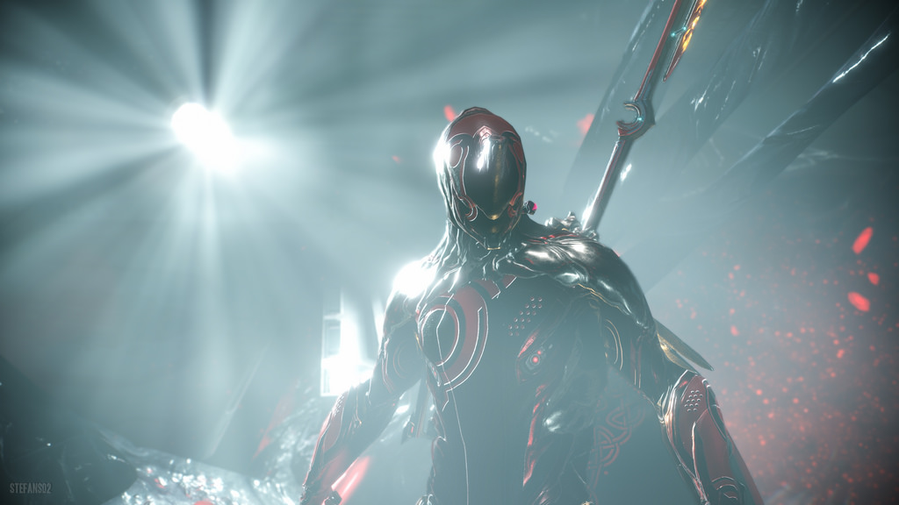

This work is licensed under a Creative Commons Attribution 4.0 International License.
Warframe can be a tough game to get into. The game has many different things to offer and creates confusion for those just having downloaded the game. Through this page, you will learn everything you need to be successful within your beginning hours.
Credits to Stefan02 (Flickr) CC-BY
Similar to Destiny, Warframe is set in space with you awakening as a Tenno after picking from 3 different warframes:
The best Frame to choose in the beginning is the Excalibur due to it's versatility and ease of use. It is also one of the hardest frames to get later on, so your best bet is to get it in the beginning while you still can. Throughout the game, you will be given opportunities to create many more frames and use their abilities as well (each one bringing new abilities to the table). The Excalibur has four abilities available to use (Slash Dash, Radial Blind, Radial Javelin, and Exalted Blade).
In the beginning after waking up, you are given the option to choose between two primary weapons and two melee weapons, a bow or assault rifle and a staff or sword. This is of course a personal choice and during the first few missions has no effect on which you prefer. Later on in the market, you are given the opportunity to create bigger and better weapons after buying their blueprints(primary, secondary, and melee).
Once you have completed your first mission, you are extracted back to your ship, this is where you find everything you need to continue. In your ship you have an arsenal, foundry, market, codex, nav, mods and more all allowing you to move forward. In the beginning, you are sent on missions to find the units needed to make them available. All are pretty straight-forward.
Warframe has several sanctuaries where players can come together and meet. Each one has a different faction held to them. When beginning the game, you will find that there are 2 on Earth allowing you do more side missions and buy things necessary for your frame.
Back to list of games
This work is licensed under a Creative Commons Attribution 4.0 International License.